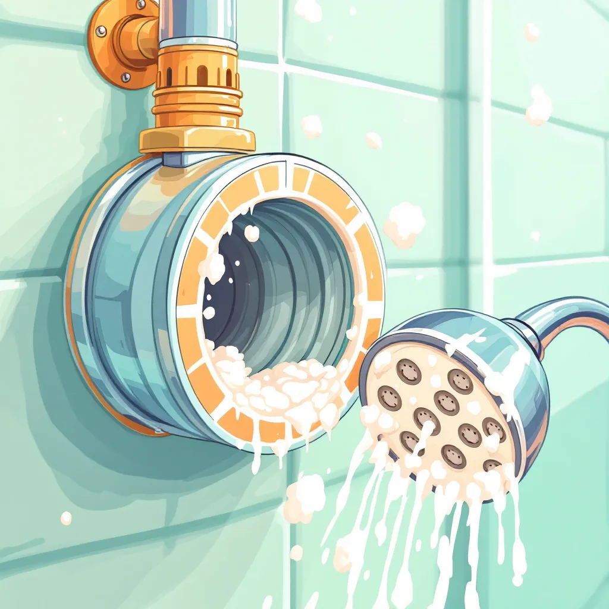
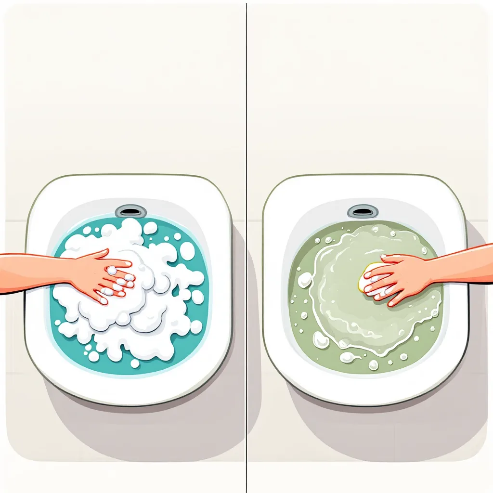
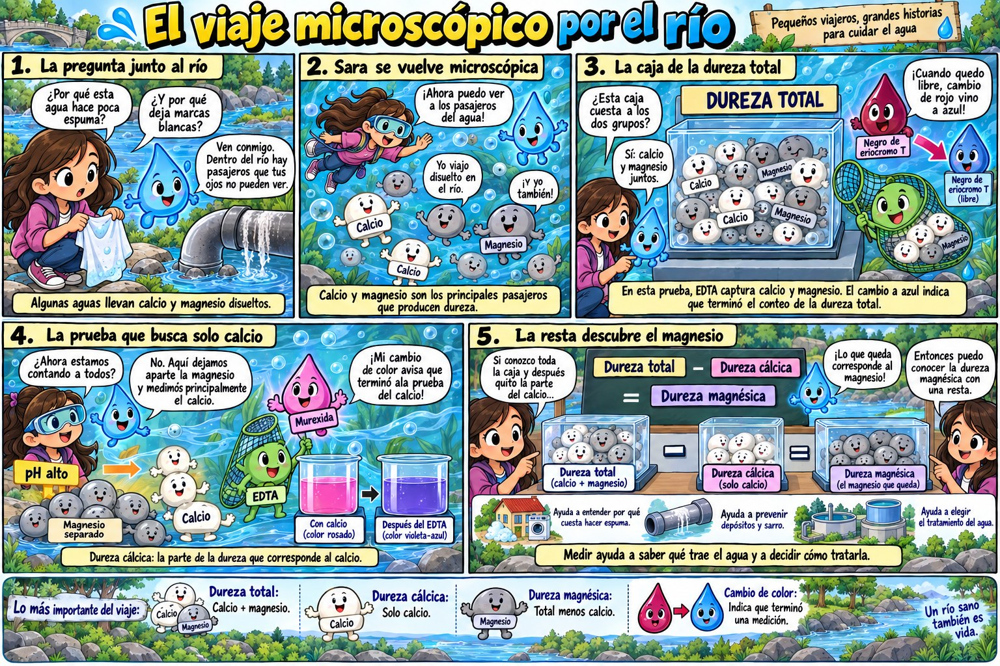

¿Qué es la dureza?
Para empezar, la dureza indica cuánto calcio y magnesio hay disueltos en el agua. Estos minerales llegan cuando el agua atraviesa rocas como la caliza. Por ejemplo, un agua dura deja una costra blanca, llamada sarro, dentro de ollas, duchas y tuberías. Además, con ella el jabón hace poca espuma, por lo que se gasta más. Sin embargo, el agua dura no suele causar daño a la salud.


Un viaje para entender los tres tipos

Total, cálcica y magnésica
Además, la dureza se divide en tres tipos. La dureza total suma el calcio y el magnesio juntos. En cambio, la dureza cálcica cuenta solo el calcio; para medirla, se sube mucho el pH, de modo que el magnesio se separa y no participa. Finalmente, la dureza magnésica no se mide directamente, sino que se calcula con una resta: dureza total menos dureza cálcica.
Laboratorio virtual: dureza total
Agrega EDTA hasta que el color cambie a azul.
Por ejemplo, la dureza total se mide por titulación con EDTA, una sustancia que atrapa al calcio y al magnesio como una red. Antes, se agrega un indicador llamado negro de eriocromo T, que tiñe la muestra de rojo vino mientras hay minerales libres. Luego, cuando el EDTA ya atrapó todos los minerales, el color cambia a azul. Así, con el volumen gastado se calcula la dureza en mg CaCO₃/L.
Laboratorio virtual: dureza total
Sigue los pasos con el botón azul.
Laboratorio virtual: dureza cálcica
Calculadoras de dureza
¿Qué tan dura es?
Valores en mg CaCO₃/L. En Colombia, el agua para beber puede tener como máximo 300 mg CaCO₃/L (Resolución 2115 de 2007).
Mini-reto
Un agua tiene dureza total de 240 mg CaCO₃/L y dureza cálcica de 160. ¿Cuál es su dureza magnésica?
¿Por qué con agua dura se gasta más jabón?